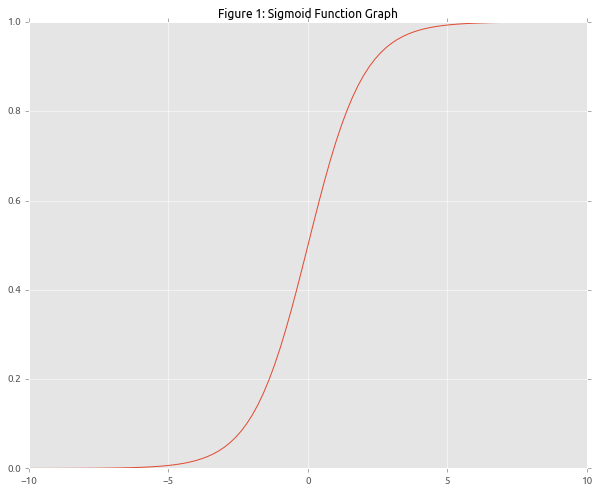
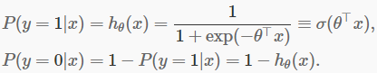
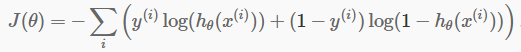
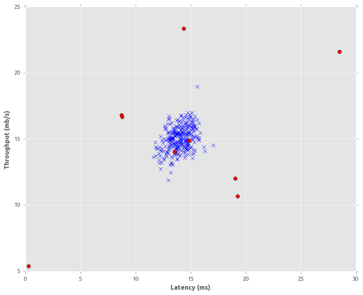
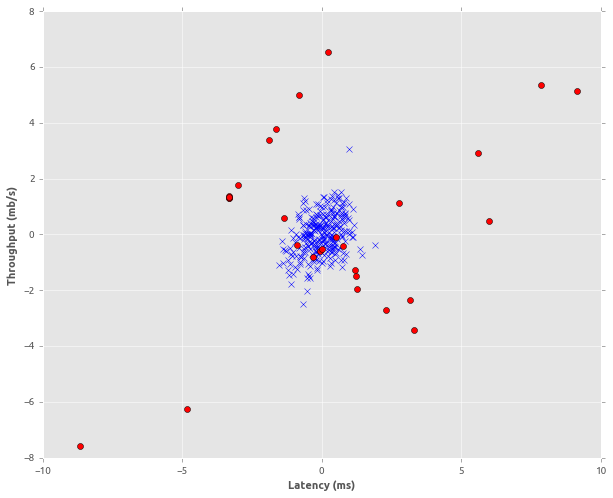
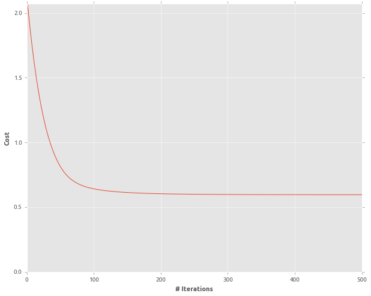

This blog discusses the implementation of Logistic Regression in TensorFlow to detect anomalies. Also, we will see how SMOTE (Synthetic Minority Over-sampling Technique) can be applied to generate additional data points for minority class.
In Linear Regression tutorial, we predicted house prices i.e. continuous values. To achieve this, we multiplied the weight vector (W) with feature vector (X) to get the prediction (Y). In the classification problem, we want to predict discrete output (Y) or for probabilistic interpretation we want output value to be between 0 and 1. Logistic regression is a well know classification algorithm with a nice probabilistic interpretation that can be used to predict discrete values.
We have seen in linear regression WTX results in real value output but to get the discrete output, we need to use some function which can squash the range of WTX between 0 and 1. One such squashing function is a sigmoid or logistic function, a graph of which is shown in Figure 1. It looks like a smooth S which increases slowly as it moves towards the origin, crosses the origin at 0.5 and then flattens out.

In short, we want to learn a function of the form:
 ----(i)
To determine, how well we are learning to classify the training examples with binary labels we have to use cost function which can be minimise using some optimisation algorithm like gradient descent. Equation 2 shows the cost function that we will be minimising to learn the optimal weight vector.
 ----(ii)
To get deeper an intuition for the selection of this cost function please consult following resource.
Supervised learning algorithms work well when the dataset has an equal number of class labels. E.g. consider a bank transaction dataset, where each transaction has a label representing whether the transaction is fraudulent or not. If the number of fraudulent transactions is less than non-fraudulent transaction then dataset is an imbalance. Generally, the performance of machine learning algorithms is evaluated using accuracy. However, this is not feasible when the dataset is imbalanced. Because, if majority class has the ratio of 98% and minority class has only of 2%. The random guessing strategy will give the accuracy of approx. 98%, ignoring the wrong classification rate of minority class data points. To overcome the dataset imbalance several techniques have been proposed in the literature. SMOTE is one of such technique that is used to generate additional data points belonging to the minority class, to have a balanced dataset. The algorithm oversamples the minority class by generating synthetic data points. If the oversampling rate is 300% and K = 5 (number of nearest neighbors to consider, while generating new data points), then three neighbors out of nearest K neighbors are selected and one sample will be generated by taking the difference between feature vector (under consideration) and its nearest neighbors, multiplying the difference by small random number between 0 and 1. This approach allows data points from minority class to become more general. The paper proposed SMOTE can be accessed at the following link.
We will use “imbalanced-learn” package. It has implementation of SMOTE and several other variants of it, to counter data imbalance problem. The package can be downloaded via pip: pip install -U imbalanced-learn or Anaconda Cloud platform distribution by: conda install -c glemaitre imbalanced-learn.
Let’s get started with implementing logistic regression to predict anomalies.
Load the required libraries and define some helper functions.
import matplotlib.pyplot as plt
import numpy as np
from numpy import genfromtxt
from imblearn.over_sampling import SMOTE
import tensorflow as tf
%matplotlib inline
def read_dataset(filePath,delimiter=','):
data = genfromtxt(filePath, delimiter=delimiter)
features, labels = np.array(data[:,0:-1], dtype=float), np.array(data[:,-1],dtype=int)
return features,labels
def feature_normalize(features):
mu = np.mean(features,axis=0)
sigma = np.std(features,axis=0)
return (features - mu)/sigma
def append_bias_reshape(features):
n_training_samples, n_dim = features.shape[0], features.shape[1]
features = np.reshape(np.c_[np.ones(n_training_samples),features],
[n_training_samples,n_dim + 1])
return features
def one_hot_encode(labels):
n_labels = len(labels)
n_unique_labels = len(np.unique(labels))
one_hot_encode = np.zeros((n_labels,n_unique_labels))
one_hot_encode[np.arange(n_labels), labels] = 1
return one_hot_encode
def plot_points(features,labels):
normal = np.where(labels == 0)
outliers = np.where(labels == 1)
fig = plt.figure(figsize=(10,8))
plt.plot(features[normal ,0],features[normal ,1],'bx')
plt.plot(features[outliers,0],features[outliers ,1],'ro')
plt.xlabel('Latency (ms)')
plt.ylabel('Throughput (mb/s)')
plt.show()Load and visualize the original dataset.
features,labels = read_dataset('data.csv')
normalized_features = feature_normalize(features)
plot_points(features,labels)
Apply SMOTE algorithm to generate 10% additional data for minority class and visualize it.
sm = SMOTE(ratio=0.1,k=5,kind='regular',random_state=10)
features_res, labels_res = sm.fit_sample(normalized_features, labels)
plot_points(features_res,labels_res)
Initalize required variables and split the data set into train and test set.
features = append_bias_reshape(features_res)
one_hot_labels = one_hot_encode(labels_res)
n_dim = features.shape[1]
rnd_indices = np.random.rand(len(features)) < 0.70
train_x = features[rnd_indices]
train_y = one_hot_labels[rnd_indices]
test_x = features[~rnd_indices]
test_y = one_hot_labels[~rnd_indices]
learning_rate = 0.1
training_epochs = 10
X = tf.placeholder(tf.float32,[None,n_dim])
Y = tf.placeholder(tf.float32,[None,2])
W = tf.Variable(tf.ones([n_dim,2]))
init = tf.initialize_all_variables()Define sigmoid activation and cost function to optimize.
y_ = tf.nn.sigmoid(tf.matmul(X,W))
cost_function = tf.reduce_mean(tf.reduce_sum((-Y * tf.log(y_)) - ((1 - Y) * tf.log(1 - y_)),
reduction_indices=[1]))
optimizer = tf.train.GradientDescentOptimizer(learning_rate).minimize(cost_function)Training the classifier and visualize the cost.
cost_history = np.empty(shape=[1],dtype=float)
with tf.Session() as sess:
sess.run(init)
for epoch in range(training_epochs):
sess.run(optimizer,feed_dict={X:train_x,Y:train_y})
cost_history = np.append(cost_history,sess.run(cost_function,
feed_dict={X: train_x,Y: train_y}))
y_pred = sess.run(y_ , feed_dict={X: test_x})
correct_prediction = tf.equal(tf.argmax(y_,1), tf.argmax(Y,1))
accuracy = tf.reduce_mean(tf.cast(correct_prediction, tf.float32))
print "Accuracy: ",(sess.run(accuracy, feed_dict={X: test_x, Y: test_y}))
fig = plt.figure(figsize=(10,8))
plt.plot(cost_history)
plt.axis([0,training_epochs,0,np.max(cost_history)])
plt.xlabel('# Iterations')
plt.ylabel('Cost')
plt.show()The resulting accruacy of the classifier is around 93%.

Python notebook and dataset is available at the following link.
Equations adapted from: http://ufldl.stanford.edu/tutorial/supervised/LogisticRegression/